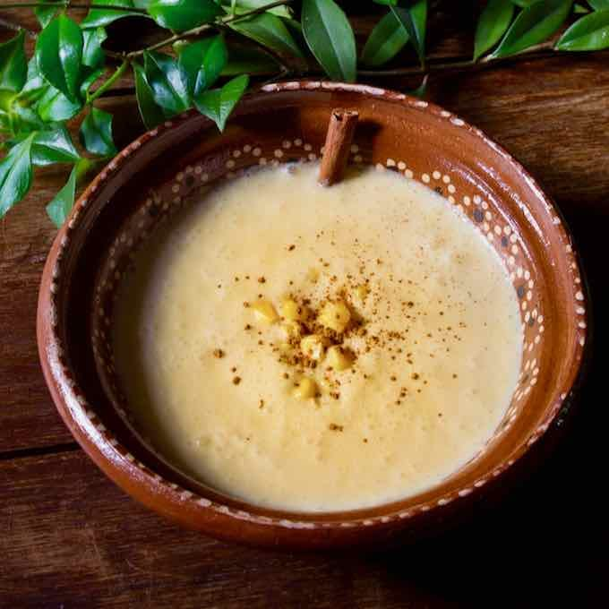

Raíces ancestrales
El atol tiene sus raíces en las culturas mesoamericanas, donde el maíz era uno de los alimentos principales. Con el paso del tiempo, diferentes formas de preparar el atol se incorporaron a las tradiciones de El Salvador.

El atol de elote es una bebida tradicional de El Salvador preparada principalmente con elote tierno, leche, azúcar y canela. Tiene una textura espesa y cremosa, además de un sabor dulce que lo convierte en una de las bebidas típicas más apreciadas del país.
Conoce la tradición y preparación de una de las bebidas más representativas de la gastronomía salvadoreña.
El atol tiene sus raíces en las culturas mesoamericanas, donde el maíz era uno de los alimentos principales. Con el paso del tiempo, diferentes formas de preparar el atol se incorporaron a las tradiciones de El Salvador.
Se prepara utilizando elotes tiernos que se muelen para obtener una mezcla que posteriormente se cocina con leche, azúcar y canela hasta alcanzar una consistencia espesa y cremosa.
El atol de elote es una bebida que suele disfrutarse caliente y es común encontrarla en ferias, celebraciones, mercados y reuniones familiares. Su sabor representa parte de la tradición culinaria de El Salvador.
Lugares donde puedes disfrutar de un delicioso atol de elote salvadoreño.
Durante las ferias y fiestas patronales de diferentes municipios es común encontrar puestos de comida típica donde se ofrece atol de elote caliente.
Contacto:
Consulta directamente con el establecimiento.
Horario:
Depende de la actividad.
En diferentes mercados y lugares de comida tradicional puedes encontrar atol de elote, especialmente durante las temporadas de festividades y actividades culturales.
Contacto:
Consulta directamente con el mercado.
Horario:
Depende del mercado.
Algunos restaurantes y negocios especializados en gastronomía salvadoreña ofrecen atol de elote como parte de sus bebidas y platillos tradicionales.
Contacto:
Consulta sus canales oficiales.
Horario:
Confirma la atención directamente.